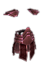
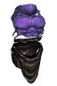
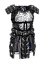

Filters:
Bloodbath Raiment
320 Armor
40% Bleeding Resistance
38% Elemental Resistance
35% Vitality Resistance
69 Life Leech Retaliation over 3.0 Seconds
+50% Bleeding Damage
20.0% Chance of 132 Life Leech over 3.0 Seconds
+50% Life Leech
10% of Attack damage converted to Health
-5.0 Health Regeneration per second
+75% Energy Regeneration
+3 to Hemorrhage
+1 to all skills in Chaos Mastery
LVL 49, DEX 168, INT 438
Burning Chestguard
145 Armor
40% Fire Resistance
50% Reduction in Burn Duration
21 Fire Retaliation
54 Burn Retaliation over 3.0 Seconds
+1.0 Health Regneration per second
+150 Energy
+1.0 Energy Regeneration per second
+10% Attack Speed
+2 to School of Fire
+2 to Cone of Flames
LVL 34, STR 313
Burning Witches' Plea

395 Armor
50% Elemental Resistance
40% Poison Resistance
40% Vitality Damage Resistance
40 - 60 Life Leech Retaliation per second
+35% Elemental Damages
+35% Vitality Damage
4% of Attack damage converted to Health
+40% Energy Regeneration
+1 to all skills in Witchcraft Mastery
+1 to all Skills
LVL 65, DEX 186, INT 580
Cage of the Furnace

725 Armor
Set : The Hell Furnace
+15% Armor Protection
100% Pierce Resistance
40% Vitality Damage Resistance
33% Chance of:
+60% Fire Damage
+60% Burn Damage
+300 Health
+100 Defensive Ability
Grants Skill : Furnace Blast (Activated upon taking damage)
Blast nearby opponents with an explosive burst of scorching flames.
10.0 Second(s) Recharge
15 Energy Cost
6.0 Meter Radius
50 Damage
360 Burn Damage over 3.0 Seconds
300 Fire Damage
LVL 62, STR 694
Cape of Cold Winters
26 Armor
15% Cold Resistance
+10% Cold Damage
+10 Intelligence
+50% Energy Regeneration
+30 Defensive Ability
Grants Skill : Ice Boom (Activated upon taking damage)
A small explosion of ice that freezes enemies in their step.
20.0 Second(s) Recharge
10 Energy Cost
6.0 Meter Radius
35 Cold Damage
1.0 - 3.0 second(s) of Freeze
30% Slowed for 5.0 Seconds
LVL 9, DEX 81, INT 125
Centurion's Mantle

68 Armor
Difficulty : Normal
-10% Shield Recovery Time
8% Chance to Avoid Projectiles
+1 to all skills in Lifegiving Mastery
LVL 14, STR 186
Centurion's Mantle
250 Armor
Difficulty : Epic
-14% Shield Recovery Time
10% Chance to Avoid Projectiles
+1 to all skills in Lifegiving Mastery
LVL 37, STR 391
Centurion's Mantle
531 Armor
Difficulty : Legendary
-18% Shield Recovery Time
12% Chance to Avoid Projectiles
+2 to all skills in Lifegiving Mastery
LVL 48, STR 531
Chillwind Vest

564 Armor
40% Bleeding Resistance
-20% Fire Resistance
40% Cold Resistance
30% Lightning Resistance
+35% Cold Damage
+30 Intelligence
+15 Dexterity
-10% Energy Cost
+15% less Damage from Magical
+2 to Absolute Zero
Grants Skill : Arctic Power
Bonus to All Pets :
10 Cold Damage
50% Cold Resistance
LVL 44, STR 545
Cloak of the Underworld
335 Armor
40% Fire Resistance
40% Vitality Damage Resistance
40% Stun Resistance
+80% Health Regeneration
+80% Energy Regeneration
+160 Defensive Ability
+11% Movement Speed
Grants Skill : Pandemonium
LVL 46, DEX 152, INT 380
Coat of Myriad Dimensions

470 Armor
Set : Journey of Myriad Dimensions
60% Bleeding Resistance
60% Vitality Damage Resistance
40% Stun Resistance
+10% Intelligence
+85 Defensive Ability
5% Chance to Avoid Projectiles
+2 to all skills in Time Mastery
Grants Skill : Timetraveller's Technique
LVL 61, STR 210, DEX 497
Corrupted Armor
149 Armor
Difficulty : Epic
24% Bleeding Resistance
24% Life Leech Resistance
6% of Attack damage converted to Health
+1 to all skills in Chaos Mastery
LVL 43, DEX 142, INT 312
Corrupted Armor
294 Armor
Difficulty : Legendary
36% Bleeding Resistance
36% Life Leech Resistance
8% of Attack damage converted to Health
+2 to all skills in Chaos Mastery
LVL 54, DEX 180, INT 424
Croaker's Suit
292 Armor
Difficulty : Epic
+30% Instant Poison Damage
+30% Poison Damage
+5% Movement Speed
Grants Skill : Murkmire Burst (Activated on attack)
Each attack has a chance of sending concentrated bursts of blackened poison at an enemy.
3.0 Second(s) Recharge
3 Projectile(s)
1.0 Meter Radius
80 Poison Damage over 2.0 Seconds
80 Vitality Decay over 2.0 Seconds
10% Chance of:
33% Reduced Damage for 2.0 Seconds
33% Slowed for 2.0 Seconds
40 Instant Poison Damage
LVL 48, STR 150, DEX 300
Croaker's Suit
584 Armor
Difficulty : Legendary
+45% Instant Poison Damage
+45% Poison Damage
+8% Movement Speed
Grants Skill : Murkmire Burst (Activated on attack)
Each attack has a chance of sending concentrated bursts of blackened poison at an enemy.
3.0 Second(s) Recharge
3 Projectile(s)
1.0 Meter Radius
150 Poison Damage over 2.0 Seconds
150 Vitality Decay over 2.0 Seconds
10% Chance of:
44% Reduced Damage for 2.0 Seconds
44% Slowed for 2.0 Seconds
75 Instant Poison Damage
LVL 58, STR 200, DEX 400
Cyzician Armor
64 Armor
Set : Uniform of Cyzicus
+10% Armor Protection
15% Elemental Resistance
+100 Energy
+30% Energy Regeneration
+10% Movement Speed
LVL 15, STR 193
Darkwyrm Harness

635 Armor
10% Physical Resistance
60% Bleeding Resistance
80% Fire Resistance
65% Poison Resistance
+20% Block Chance
+6.0 Health Regeneration per second
-20% Shield Recovery Time
+3 to Monster Hunter
+3 to Corruption
Grants Skill : Dragon Aspect (Activated upon taking melee damage)
Embody the empowering image of black dragons, aligning yourself in power and endurance to those creatures. However, such a gift is not easy to bear for a fragile human.
Cannot be dispelled.
30.0 Second(s) Recharge
15 Active Energy per Second
10.0 Second Duration
20.0% Chance of:
+100% Total Damage
1.0 - 3.0 second(s) of Fear
+300% Health Regeneration
50 Armor
60% Pierce Resistance
15% Elemental Resistance
LVL 62, STR 679
Death Priest's Cuirass

265 Armor
Difficulty : Epic
50% Vitality Damage Resistance
+1 to all skills in Necromancy Mastery
+1 to all skills in Lifegiving Mastery
LVL 44, STR 411
Death Priest's Cuirass
579 Armor
Difficulty : Legendary
100% Vitality Damage Resistance
+2 to all skills in Necromancy Mastery
+2 to all skills in Lifegiving Mastery
LVL 55, STR 588
Dreadlord's Cage
388 Armor
90% Bleeding Resistance
40% Cold Resistance
90% Vitality Damage Resistance
80% Life Leech Resistance
160 Life Leech Retaliation over 4.0 Seconds
+80% Life Leech Retaliation with +50% Improved Duration
+80% Life Leech
+80% Energy Regeneration
+65 Defensive Ability
+24% Less Damage from Undead
+24% Less Damage from Ghosts
LVL 65, DEX 267, INT 499
Eliminator's Suit

95 Armor
30% Pierce Resistance
15% Lightning Resistance
+15% Lightning Damage
+15% Electrical Burn Damage
+1.0 Energy Regeneration per second
+5% Total Speed
20% increase in Projectile Speed
+2 to Magical Winds
+2 to Blinding Winds
LVL 25, STR 108, DEX 231
Fangshi's Robes

285 Armor
10% Physical Resistance
30% Pierce Resistance
50% Bleeding Resistance
50% Vitality Damage Resistance
+40% Vitality Damage
+40% Vitality Decay
Grants Skill : Summon Undead Ninja
Bonus to All Pets :
30 Armor
8% Physical Resistance
+100 Health
LVL 55, DEX 179, INT 477
Gear of Mu Guiying

415 Armor
10% Physical Resistance
34% Pierce Resistance
50% Poison Resistance
+10% Shield Block Chance
45 Physical Retaliation
+2.0 Health Regeneration per second
+2 to Godly Presence
+2 to Battleground's Menace
LVL 38, STR 441
Ghosthunter
260 Armor
30% Cold Resistance
25% Vitality Damage Resistance
60 Vitality Decay over 2.0 Seconds
+24% Vitality Damage
+24% Vitality Decay
15 Vitality Damage
+10% Energy
+3 to Acute Precision
+1 to all skills in Chaos Mastery
Grants Skill : Ghost Rush (Activated on attack)
Gather necrotic energy around you to invoke a group of vengeful spirits from beyond the grave. However, the connection can only be sustained for a brief moment.
90.0 Second(s) Recharge
100 Energy Cost
Extra Life Time 6 Seconds
Gravecalled Ghost Attributes:
Life Time 6.0 Seconds
562 Health
168 Energy
Gravecalled Ghost Abilities:
69 - 87 Damage
LVL 37, STR 128, DEX 289
Gilded Hemithoorakion

72 Armor
+8% Armor Protection
10% Elemental Resistance
-10% Shield Recovery Time
8% Chance to Avoid Projectiles
Grants Skill : Avoidance (Activated upon taking damage)
This perfectly fitted armor allows you to stay unconstrained and avoid enemy attacks with ease.
8.0 Second(s) Recharge
3.0 Second Duration
20% Chance to Avoid Projectiles
25 Armor
LVL 16, STR 178
Gloomweaver's Bodyguard

573 Armor
Set : Gloomweaver's Set
60% Pierce Resistance
15% Elemental Resistance
60% Poison Resistance
60% Vitality Damage Resistance
40% Reduced Entrapment Duration
160 - 240 Instant Poison Duration
+30 Dexterity
+300 Health
12% Chance to Dodge Attacks
12% Chance to Avoid Projectiles
+1 to all skills in Science Mastery
LVL 57, STR 629
Heartless Within

760 Armor
Set : Sovereign of Void
25% Pierce Resistance
25% Elemental Resistance
25% Vitality Damage Resistance
60% Life Leech Resistance
+60% Life Leech
+60% Energy Leech
+20% Health
-3.0 Health Regeneration per second
+20% Energy
+1.0 Energy Regeneration per second
+100% Energy Regeneration
Grants Skill : Summon Demonic Archer
LVL 75, STR 688
Hera's Thundercloud Shawl

545 Armor
+8% Armor Absorption
30% Bleeding Resistance
30% Elemental Resistance
50% Lightning Resistance
+16% Shield Block Chance
+35% Lightning Retaliation
25 Lightning Retaliation
55 Electrical Burn Retaliation over 2.0 Seconds
+35% Electrical Burn Retaliation
+25% Lightning Damage
+25% Electrical Burn Damage
+3 to Atomic Burst
LVL 45, STR 254, INT 340
Inventor's Raiment

320 Armor
85% Cold Resistance
85% Lightning Resistance
40.0% Chance of 40 - 110 Lightning Retaliation
6.0% Chance of 2.0 Stun Retaliation
+5% Total Speed
+94% Casting Speed
8% Chance to Dodge Attacks
+1 to all skills in Witchcraft Mastery
+1 to all skills in Science Mastery
LVL 56, DEX 410, INT 190
Jacket of Love

60 Armor
+10% Armor Absorption
30% Fire Resistance
25.0% Chance of +100% Burn Retaliation
+5.0 Health Regeneration per second
+150% Health Regeneration
+2 to Pure Heart
Grants Skill : Burning Desire (Activated upon taking damage)
A nostalgic vision of your homeland appears before your eyes, filling you with a burning desire to liberate the once peaceful land from its monstrous invaders.
45.0 Second(s) Recharge
5.0 Second Duration
+25.0 Health Regeneration per second
125 Burn Retaliation per Second
LVL 25, DEX 112, INT 228
Ixmucane's Plate

259 Armor
Difficulty : Epic
50 Vitality Retaliation
115 Life Leech Retaliation over 3.0 Seconds
+5.0 Health Regeneration per second
LVL 48, STR 515
Ixmucane's Plate
519 Armor
Difficulty : Legendary
75 Vitality Retaliation
150 Life Leech Retaliation over 3.0 Seconds
+7.5 Health Regeneration per second
LVL 58, STR 655
Jason's Armor
42 Armor
25% Bleeding Resistance
20.0% Chance of 100% Reduction in Bleeding Duration
+8 Strength
+200 Health
+70% Health Regeneration
-10% Movement Speed
LVL 9, STR 125
Knight's Oath

620 Armor
+20% Armor Protection
60% Pierce Resistance
70% Bleeding Resistance
40% Cold Resistance
25% Damage Reflected
+90 Offensive Ability
+3 to Fiery Strikes
+1 to all skills in Lifegiving Mastery
Grants Skill : Steel Defense (Activated upon taking damage)
The armor covers itself with enchanted steel, heavily crippling anyone who dares to strike it.
30.0 Second(s) Recharge
4.0 Second Duration
800 Physical Retaliation
1.0 Stun Retaliation
75 Armor
LVL 54, STR 662
Liberator's Topcoat
150 Armor
-60% Reduction to all Requirements
LVL 30, STR 1, DEX 1, INT 1
Lorekeeper's Clothes

218 Armor
-15% Pierce Resistance
20% Vitality Damage Resistance
20% Elemental Resistance
+20 Intelligence
+40 Dexterity
+250 Health
+60% Energy Regeneration
15% Chance to Dodge Attacks
15% Chance to Avoid Projectiles
-10% Strength Requirement for all Weapons
-10% Intelligence Requirement for all Weapons
Grants Skill : Refresh (Activated on low health)
Subtracts time from recharging skills allowing you to use them more frequently.
24.0 Second(s) Recharge
-24.0 Second(s) to all Recharge Times
90 Energy Cost
LVL 38, DEX 140, INT 336
Lurker's Suit

32 Armor
15% Lightning Resistance
6 Piercing Damage
6 Vitality Damage
+100 Health
LVL 10, STR 118
Magehunter's Quiver

208 Armor
50% Energy Leech Resistance
20% Reduction in Energy Leech Duration
80% Reduced Entrapment Duration
55% Skill Disruption Protection
10 Piercing Damage
+20 Intelligence
+15 Dexterity
+150 Energy
+18% Attack Speed
20% Weapon Base Damage becomes Elemental
+2 to Magical Winds
LVL 35, STR 126, DEX 284
Midnight Flight

216 Armor
60% Pierce Resistance
80% Cold Resistance
40% Energy Leech Resistance
+20% Pierce Resistance
+20% Elemental Damages
+280 Energy
+30% Casting Speed
+13% Movement Speed
15% Chance to Dodge Attacks
Grants Skill : Midnight Flight
LVL 53, DEX 306, INT 418
Naturespeaker's Torso

36 Armor
Set : Naturespeaker's Outfit
10% Pierce Resistance
15% Poison Resistance
+70 Health
+40% Energy Regeneration per second
-6% Recharge
LVL 14, DEX 80, INT 140
Night's Cold Embrace

445 Armor
Set : Night Eternal
100% Vitality Damage Resistance
12% Health Reduction Retaliation
65 Life Leech Retaliation per Second
+50% Vitality Decay with +25% Improved Duration
+25% Life Leech with +25% Improved Duration
5.0% Chance of 2.0 - 3.0 second(s) of Freeze
+30 Intelligence
+30 Dexterity
+10% Total Speed
+1 to all Skills
LVL 70, DEX 206, INT 547
Nordicite Armor
280 Armor
Difficulty : Epic
+25% Cold Damage
+25% Frostburn Damage
+2.0 Energy Regeneration per second
LVL 48, STR 340
Nordicite Armor
540 Armor
Difficulty : Legendary
+35% Cold Damage
+35% Frostburn Damage
+4.0 Energy Regeneration per second
LVL 58, STR 420
Nordicite Dress
150 Armor
Difficulty : Epic
15% Reduction in Frostburn Duration
+2 to Archmage's Cloak
Bonus to All Pets :
35% Reduction in Frostburn Duration
+15% Total Speed
LVL 48, DEX 166, INT 384
Nordicite Dress
280 Armor
Difficulty : Legendary
20% Reduction in Frostburn Duration
+3 to Archmage's Cloak
Bonus to All Pets :
50% Reduction in Frostburn Duration
+20% Total Speed
LVL 58, DEX 198, INT 476
Ogre-Warrior's Armor

610 Armor
10% Physical Resistance
50% Bleeding Resistance
25% Elemental Resistance
+15% Shield Block Chance
25% Reduced Defensive Ability Retaliation for 2.0 Seconds
+20% Physical Damage
+30% Stun Duration
+10% Strength
+10% Health
+100% Health Regeneration
+100 Offensive Ability
+100 Defensive Ability
Grants Skill : Quick Recovery
LVL 62, STR 623
Pyrausta's Thorax

480 Armor
50% Pierce Resistance
60% Fire Resistance
80% Poison Resistance
+60% Burn Damage
+60% Poison Damage
+40 Strength
+420 Health
+25% Health Regeneration
17% Chance to Avoid Projectiles
-12% Energy Cost
LVL 50, STR 179, DEX 459
Rainmaker's Harness

200 Armor
Difficulty : Epic
90 Frostburn Damage over 3.0 Seconds
+30% Frostburn Damage
+30% Energy Regeneration
-15% Strength Requirement for Hunting Weapons
+4 to Rain
+4 to School of Frost
LVL 40, DEX 321, INT 144
Rainmaker's Harness
420 Armor
Difficulty : Legendary
150 Frostburn Damage over 3.0 Seconds
+40% Frostburn Damage
+60% Energy Regeneration
-25% Strength Requirement for Hunting Weapons
+6 to Rain
+6 to School of Frost
LVL 52, DEX 424, INT 180
Ratlord's Battlepack

738 Armor
+10% Armor Protection
20% Physical Resistance
35% Pierce Resistance
80% Bleeding Resistance
25% Elemental Resistance
-8% Total Speed
5% Chance to Avoid Projectiles
+20% Less Damage from Giants
+20% Less Damage from Beasts
+20% Less Damage from Demons
+1 to Untamable
+3 to Battleground's Menace
LVL 59, STR 753
Robes of Experimentation

156 Armor
40% Fire Damage
10% Reduction in Burn Duration
40% Lightning Resistance
10% Reduction in Electrical Burn Duration
10% Reduction in Poison Duration
+25% Lightning Damage
+50% Energy Regeneration
+2 to Sprockets
+2 to Radioactive Core
LVL 34, DEX 119, INT 263
Robes of the Hydromagus
380 Armor
130% Cold Resistance
80% Reduced Entrapment Duration
120% Reduced Freeze Duration
+50% Cold Retaliation
150 Frostburn Retaliation over 3.0 Seconds
+50% Frostburn Retaliation
+40% Cold Damage
+40% Frostburn Damage
+250 Health
+12% Movement Speed
+2 to all skills in Aqua Mastery
+1 to all skills in Witchcraft Mastery
Grants Skill : Winter Aura
LVL 60, DEX 190, INT 508
Secret Agent's Garb

475 Armor
65% Pierce Resistance
35% Elemental Resistance
25% Poison Resistance
+50% increased Pierce Ratio
+40% Bleeding Damage
+40% Instant Poison Damage
+40% Poison Damage
+70 Offensive Ability
+8% Movement Speed
+25% Damage to Humans
+5 to Emergency Plan
+5 to Stab Wound
LVL 55, STR 186, DEX 458
Shadowsneaker's Harness

450 Armor
30% Pierce Resistance
40% Bleeding Resistance
30% Lightning Resistance
30% Poison Resistance
65% Energy Leech Resistance
40% Stun Resistance
20.0% Chance of +145% Physical Damage
20.0% Chance of +145% Vitality Damage
+100 Defensive Ability
+2 to Shadow Riposte
+2 to Interdimensional Breach
Grants Skill : Phantom Strike
LVL 64, STR 194, DEX 509
Shirt of Nessus
54 Armor
24% Poison Resistance
33% Chance for one of the following:
24 Instant Poison Retaliation
32 Poison Retaliation over 3.0 Seconds
+16 Dexterity
-5.0 Health Regeneration per second
LVL 12, STR 78, DEX 134
So-dam'oh

594 Armor
Set : Embodiment of Corruption
12% Physical Resistance
+20% Shield Block Chance
60% Slow Resistance
+25% increased Pierce Ratio
+30% Fire Damage
+60% Poison Damage
35 Piercing Damage
+70 Offensive Ability
+70 Defensive Ability
+1 to all Skills
LVL 70, STR 260, DEX 510
Spectre

420 Armor
100% Pierce Resistance
100% Vitality Damage Resistance
35% Reduction in Vitality Decay Duration
+15% Pierce Damage
+30% Bleeding Damage
+30% Vitality Damage
+15% Movement Speed
+20% Less Damage from Undead
+20% Less Damage from Ghosts
+4 to Ominous Arrows
+4 to Summon Undead Archer
Bonus to All Pets :
+20% Pierce Damage
+20% Bleeding Damage
+15% Attack Speed
50% Increase in Projectile Speed
LVL 65, STR 186, DEX 502
Stormtrooper

498 Armor
5% Physical Resistance
12% Elemental Resistance
30% Lightning Resistance
+25% Pierce Damage
+30% Lightning Damage
+27 Dexterity
+10% Health
+142 Defensive Ability
12% Absorption of Spell Energy
Grants Skill : Storm's Heart (Activated when equipped)
The storms protect you and your nearby allies from thunder and cold, while also empowering all attacks of such damage.
Cannot be dispelled.
10.0 Meter Radius
+25% Cold Damage
+25% Lightning Damage
15% Cold Resistance
15% Lightning Resistance
LVL 51, STR 420
The Flagbearer

400 Armor
40% Pierce Resistance
40% Poison Resistance
40% Vitality Damage Resistance
10 - 32 Physical Retaliation
20 Damage
+40 Strength
+15% Attack Speed
8% Chance to Dodge Attacks
+3 to Battleground's Menace
Grants Skill : Battle Standard
LVL 48, STR 380
The Lord of Death's Garb

575 Armor
50% Pierce Resistance
50% Bleeding Resistance
50% Cold Resistance
50% Life Leech Resistance
+50% Vitality Damage
+600 Health
+3.0 Health Regeneration per second
+25% Less Damage from Undead
Grants Skill : Deathchill Aura
LVL 49, STR 520
Thornmail

232 Armor
+8% Armor Protection
60% Pierce Resistance
30% Bleeding Resistance
15.0% Chance of +100% Pierce Damage Retaliation
24 Piercing Retaliation
20.0% Chance of 216 Bleeding Damage Retaliation over 3.0 Seconds
+20 Strength
+18 Dexterity
+90 Health
+50 Offensive Ability
LVL 35, STR 363
Tiger King Honor Guard

700 Armor
40% Pierce Resistance
50% Elemental Resistance
30% Fire Resistance
40 Piercing Damage
+50 Strength
+50 Dexterity
+500 Health
+20% Attack Speed
10% Chance to Dodge Attacks
+2 to Untamable
+2 to Nerves of Steel
Grants Skill : Tiger Claw (Activated on attack)
Your attacks are empowered with the legendary savagery of the tiger king.
8.0 Second(s) Recharge
80 Energy Cost
35 Damage
150 Piercing Damage
50% Reduced Damage for 5.0 Seconds
50% Reduced Resistances for 5.0 Seconds
50% Slowed for 5.0 seconds
LVL 55, STR 560
Torso of Ceyx
138 Armor
20% Cold Resistance
50% Lightning Resistance
4 - 8 Damage
10 Piercing Damage
+10% Strength
+3.0 Health Regeneration per second
+1 to Light Armor Specialist
+1 to Nerves of Steel
+1 to all skills in Barbarism Mastery
LVL 28, STR 305
Uwagi

227 Armor
Difficulty : Epic
+30 Dexterity
Grants Skill : Light Armor Specialist
LVL 48, DEX 166, INT 413
Uwagi
467 Armor
Difficulty : Legendary
+48 Dexterity
Grants Skill : Light Armor Specialist
LVL 58, DEX 198, INT 513
Vampire Coat

213 Armor
30% Fire Resistance
30% Vitality Resistance
35% Life Leech Resistance
15.0% Chance of 114 Life Leech over 3.0 Seconds
+40% Life Leech
8% of Attack damage converted to Health
+30 Dexterity
-4.0 Health Regeneration per second
+50% Energy Regeneration
+2 to Blood Harvest
LVL 38, DEX 152, INT 364
Vest of the First Apostle

296 Armor
+5% Strength
+5% Intelligence
+5% Dexterity
+500 Health
+3.0 Health Regeneration per second
+650 Energy
+300 Defensive Ability
-10% Energy Cost
+2 to all skills in Lifegiving Mastery
Bonus to All Pets :
+50% Lightning Damage
LVL 55, DEX 199, INT 543
Vest of the Manacrazed

198 Armor
80% Energy Leech Resistance
114 Energy Leech Retaliation over 3.0 Seconds
+400 Energy
+5.0 Energy Regeneration per second
+50% Energy Regeneration
50% Absorption of Spell Energy
LVL 35, DEX 135, INT 319
Zyanya's Garment

129 Armor
Difficulty : Epic
+50% Energy Leech
+5% Intelligence
-50 Health
-5% Health
50% Absorption of Spell Energy
LVL 48, DEX 170, INT 395
Zyanya's Garment
259 Armor
Difficulty : Legendary
+75% Energy Leech
+5% Intelligence
-75 Health
-5% Health
75% Absorption of Spell Energy
LVL 58, DEX 206, INT 499